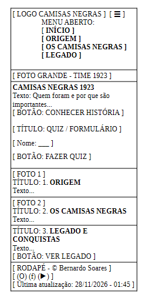
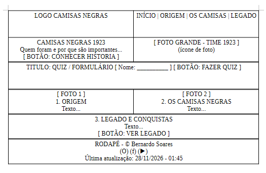

1. Nome do Site
Camisas Negras
Nome escolhido: Camisas Negras - História e Luta do Vasco da Gama
Motivo da escolha: O nome faz referência direta aos Camisas Negras de 1923, time do Vasco formado por jogadores negros e pobres que lutou contra o racismo no futebol brasileiro. É um nome forte, fácil de lembrar, ligado à história do clube e ao tema central do site: inclusão, resistência e identidade vascaína.
Domínio opcional: camisasnegras.com.br
2. Finalidade do Site
O site tem como finalidade contar a história dos Camisas Negras e mostrar como o Vasco da Gama se tornou um símbolo de luta contra o racismo e pela inclusão social no futebol brasileiro.
O site vai oferecer:
- História completa dos Camisas Negras de 1923, com linha do tempo;
- Biografias dos principais jogadores e personagens da época;
- Explicação sobre a Resposta Histórica do Vasco e o contexto do racismo na época;
- Seção sobre o legado até hoje, incluindo ações antirracistas do clube;
- Galeria de fotos, documentos e curiosidades;
- Formulário de contato e quiz para o visitante testar o que aprendeu.
Público-alvo: Torcedores do Vasco, estudantes, professores e pessoas interessadas em futebol, história do Brasil e luta antirracista.
3. Cenários
Cenário 1: O torcedor curioso
Quem é? Lucas, 16 anos, torcedor do Vasco, ouviu falar dos Camisas Negras na torcida e quer entender.
Pergunta: "Quem foram os Camisas Negras e por que eles são tão importantes para o Vasco?"
O que o site responde: Uma página inicial com resumo rápido, linha do tempo de 1923 e a história da Resposta Histórica explicada de forma simples.
Cenário 2: A estudante fazendo trabalho
Quem é? Maria, 17 anos, estudante, precisa fazer um trabalho sobre racismo no futebol brasileiro.
Pergunta: "Como o Vasco lutou contra o racismo e quais fontes eu posso usar no meu trabalho?"
O que o site responde: Seção de história com contexto da época, personagens, documentos históricos e referências confiáveis.
Cenário 3: O visitante que quer visitar São Januário
Quem é? Rafael, 28 anos, vai ao Rio e quer conhecer o estádio e a história do clube.
Pergunta: "Onde fica São Januário e o que tem para ver lá sobre os Camisas Negras?"
O que o site responde: Seção de legado e visita, com informações sobre o estádio, museu, tour e pontos históricos.
4. Esquema de Cores
Esquema inspirado nas cores do Vasco: preto e branco, com vermelho como acento para destaque e cinza para apoio.
| Cor | Código | Onde vai ser usada |
|---|---|---|
| Preto | #111111 | Fundo do cabeçalho, rodapé e títulos principais |
| Branco | #FFFFFF | Fundo principal do site e texto sobre fundo preto |
| Cinza Claro | #E8E8E8 | Fundo de cards, bordas e seções alternadas |
| Vermelho | #C8102E | Links, botões, destaques e acentos nos títulos |
5. Tipografia
Foram escolhidas 2 fontes: uma forte para títulos, lembrando camisa de futebol, e uma simples para leitura do texto.
Exemplo Título: CAMISAS NEGRAS - HISTÓRIA E LUTA
Uso: Títulos h1, h2 e h3, nome do site no cabeçalho e botões. Fonte: Oswald.
Exemplo Texto: O Vasco se recusou a excluir seus jogadores negros e pobres, mesmo com pressão dos outros clubes em 1923.
Uso: Parágrafos, listas, links, rodapé e textos corridos do site. Fonte: Inter.
6. Wireframe
Esboço da estrutura da página. Desenhado no Word, focando na estrutura e layout, antes das cores e imagens finais.
Versão Mobile (tela pequena)

Versão Desktop (tela grande)
